～Speaking About Myanmar～
一早天未光就走去魚市場，魚市場對出碼頭早已有群人在等，然後一隻一隻小船泊過來，搬上來一桶桶的海產。這裏地方不大，人越來越多，海產又不斷送上，很快就擠得水洩不通，人們不斷叫賣，有些魚蝦蟹就這樣散到地上，一些小蟹在人們的腳興腳之間爬走，不久就被踏扁。
回到旅館吃早餐，之後外出逛了數間書店，看見一本英緬對照的小書，是用來教當地人如何介紹緬甸給外地人的，身上的 Kyat 所剩無幾，這裏的對換率又太過可怕，但都買了它。
這本書叫做 Speaking About Myanmar，裏面很簡單地介紹緬甸的地、人、文化，只有數十頁，很快就看完。這本書極之官腔，有些句子簡直看到暈倒，把本土極少罪案歸功於政府的優良管治。又看到其中在讚揚自己天然資源豐富，但竟然說多年來樹林被一些不懂事的原住民砍伐，現在要保育云云。
我想起在 Bagan 去 Mt. Popa 的導遊慨嘆，開伐森林的可是政府，這本書卻向人說是人民的錯。在這獨栽高壓的統治，無知愚民又如何可以多年來做錯事，除非因為對某些特權人仕有利益關係。
這裏的書店又有不少十二星座運程的書籍，我在一堆文具中竟然看見一些包裝印有印度明星 Shahrukh Khan 的肖像！
逛到差不多時候回旅館退房，我把兩本雜誌留了給正在半工讀的服務生，Jim 和 Lin 的車準時進入我旅館門口，載我一起到機場，付車錢後，我真正地一張 Kyat 也沒有了。
在 Sittwe 機場，關員很小心地核對我們的出入記錄，我記得我數天前到達這裏時的確要登記護照資料。這時我想，若果我真的如 Bagan 大叔所說從陸路到 Mrauk U，那麼我會不會沒有進入 Sittwe 的記錄，那會否很大鑊呢？
我們經過安檢，安檢人員把「已檢查」貼紙貼在我們的行李上，可是其實根本沒有檢查過。我們在候機室坐著，在這裏 Jim 和我談了很多東西，大家都對 Starsucks 這類連鎖店充斥各地很不滿，但他竟然問我對中美經濟的意見，鬼識咩......
我也不記得我究竟回應了一堆什麼話了。不過說到他手上的一本 TIME，裏面有幾頁是亞洲人很怕傳染病戴上 mask 的圖，他說他們其實不會這樣做的，雖然沒有明文規定，但卻大家心底裏都不願別人蓋著臉孔，尤其是 911 之後，這我還是首次聽到。
飛機到達 Yangon，我們一起乘車到市區，他們去 Motherland Inn 2，我則去法國老人推薦但 Lonely Planet 沒有提過的 White House，聽說那裏的早餐極美味。我先下車，和他們道別，進入「白宮」，這旅館乾淨整潔，房間白雪雪的，我還有點不慣。
到 Central Hotel 換錢，竟然連 Yangon 都跌到 1 美元 換 790 Kyat。
走進網吧到 Air Asia 辦好兩程飛機的登機手續，印好登機証，（因為曼谷機場的 Air Asia 沒有 transfer 櫃位在內面，如果沒有登機証，要出外面再入去），之前曾見到說緬甸網路太慢，不能在 Air Asia 的網頁辦什麼，但現在完全沒問題。
這裏的網吧不貴，不夠一小時更不會收足錢，在緬甸很多人用 Google，眼見全場的人，差不多全都在用 Google Talk，戴上連耳筒的咪，邊上網邊傾計。
夜晚我到很多印度餐吃的地區的 Nila Biryani 吃雞髀飯，這區日夜都很旺場，有印度廟，有賣印度食品、音樂和電影的攤販。
回到白宮，想致電 Sea Sar Guest House 訂房，白宮負責人竟說 Sea Sar 不用訂房，一定有房的，又說那裏的主人是他的朋友，然後給了我那裏的名片。
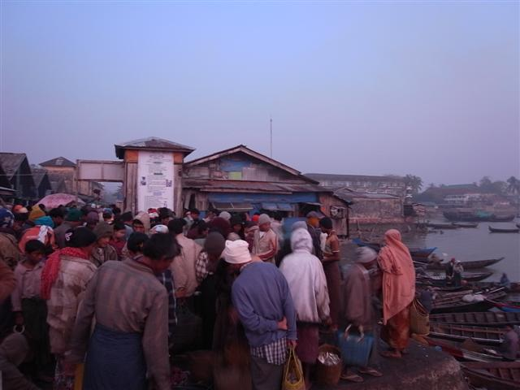
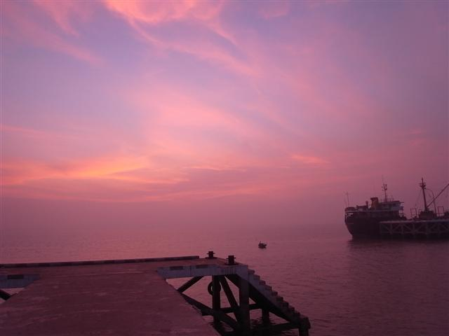
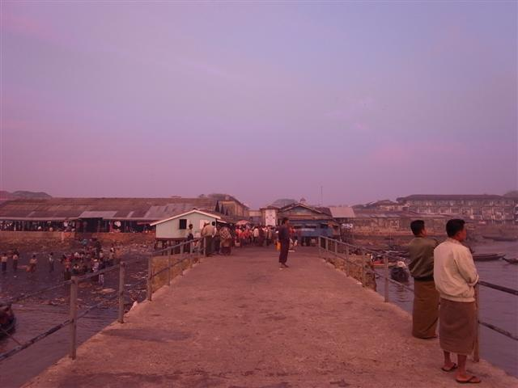
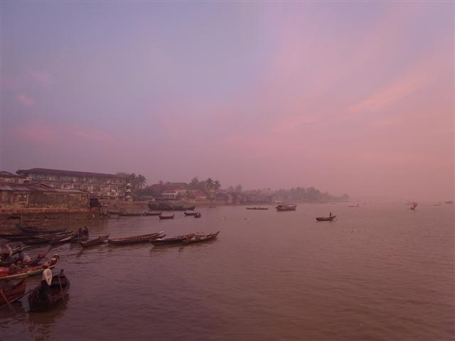
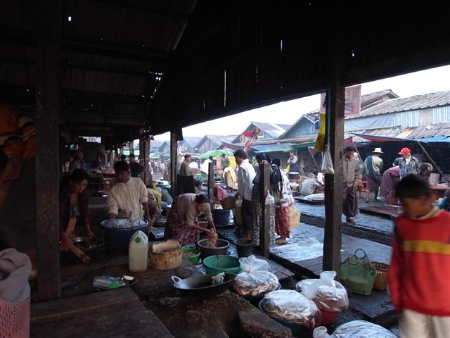
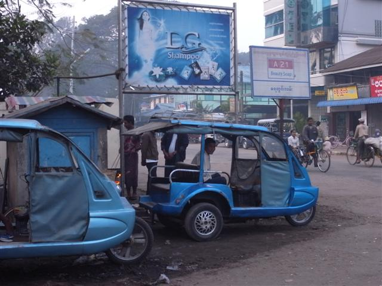
新式 trishaw
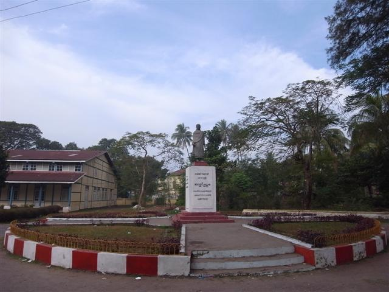
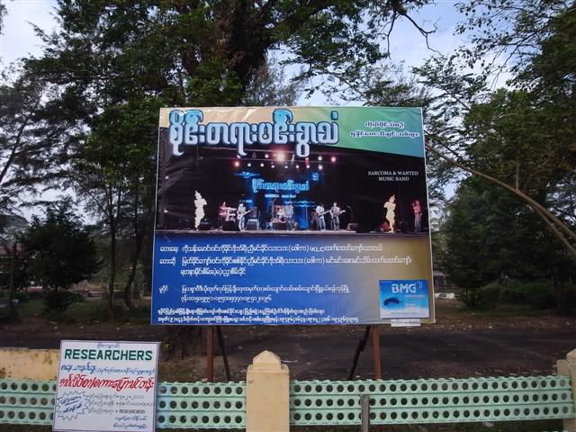
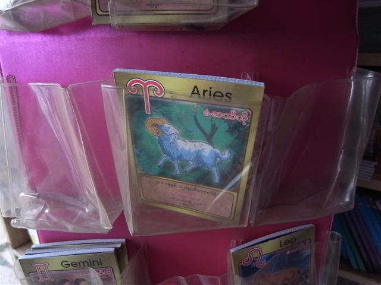
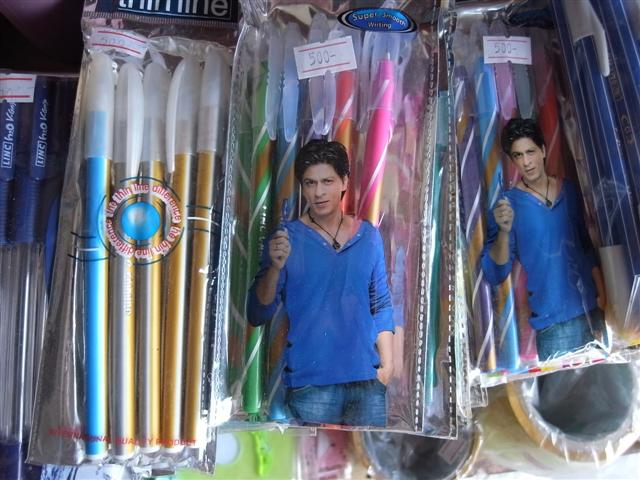
印度明星 Shahrukh Khan
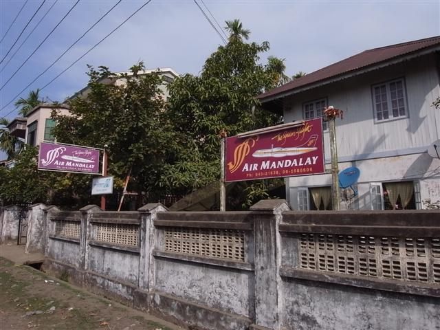
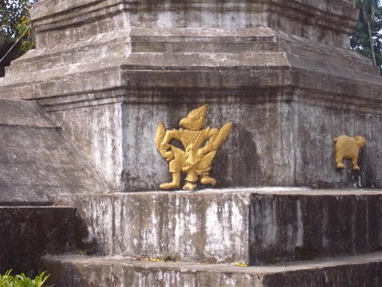
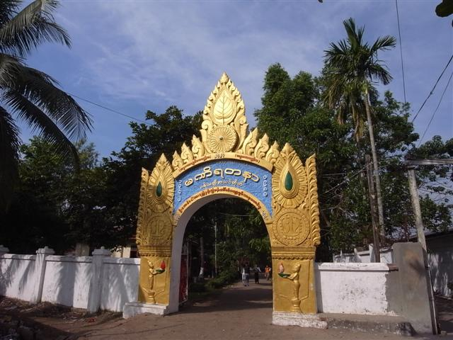
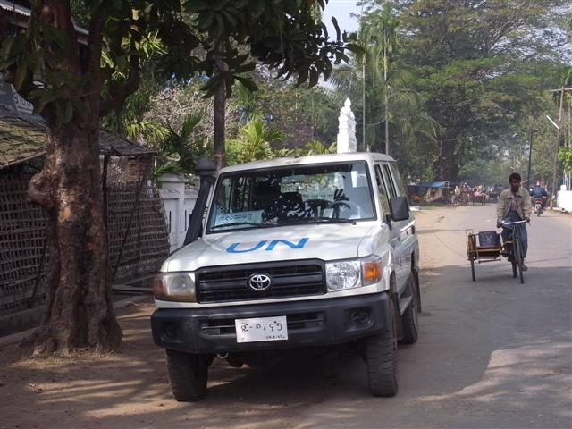
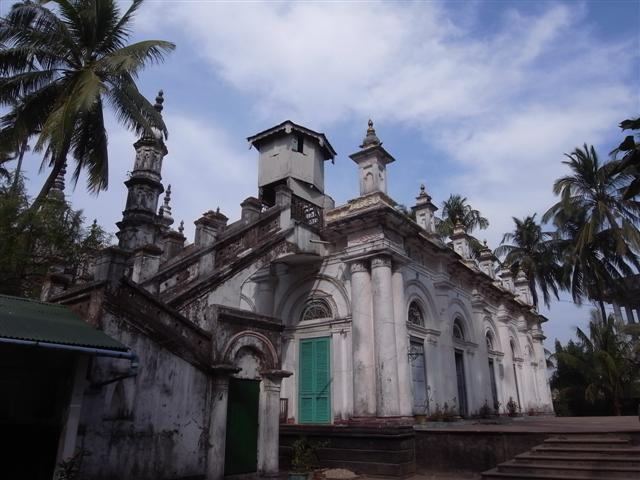
Jama Mosque
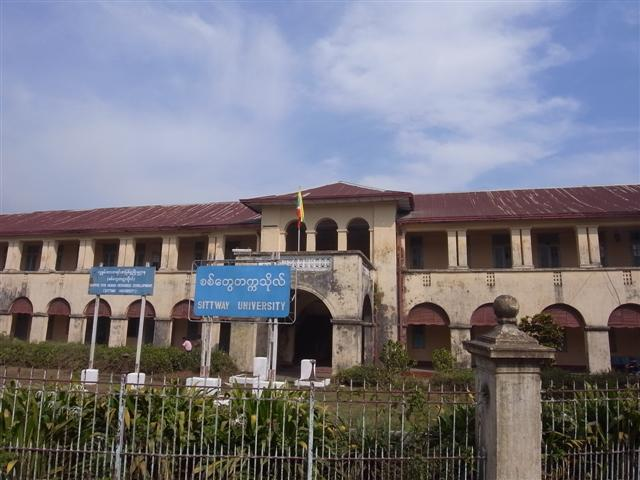
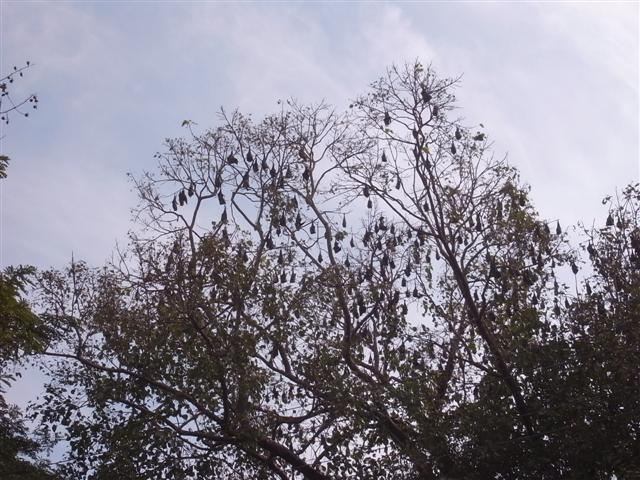
蝙蝠
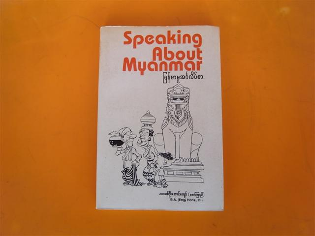
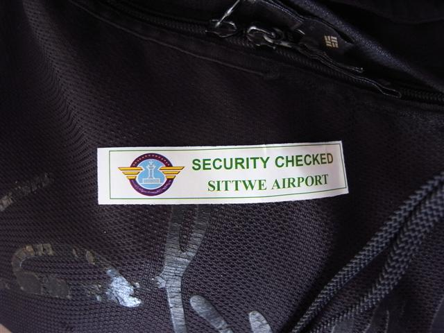
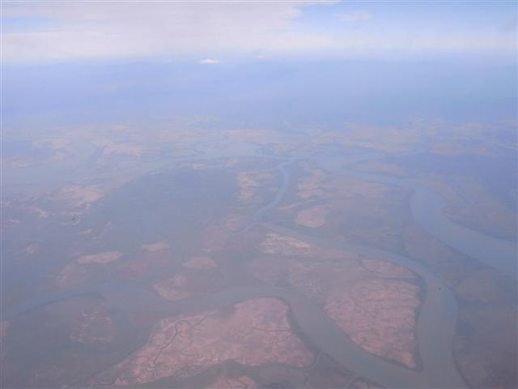
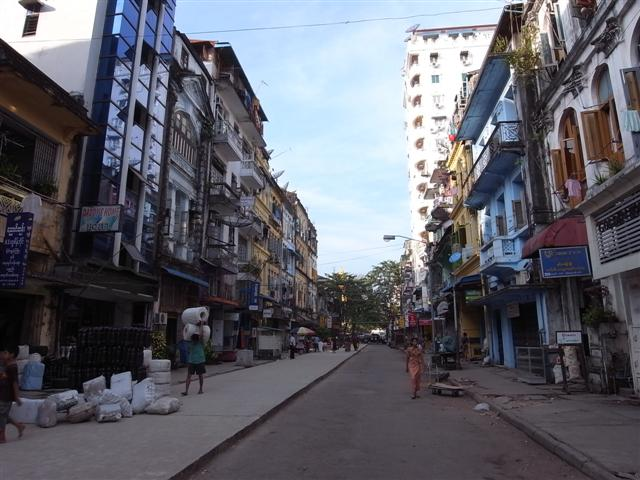
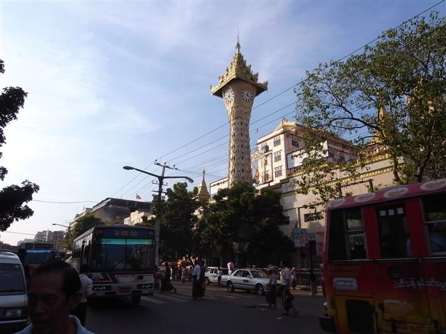
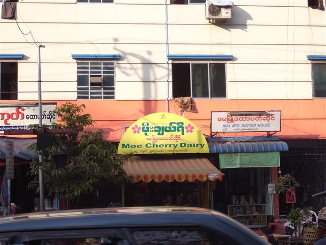
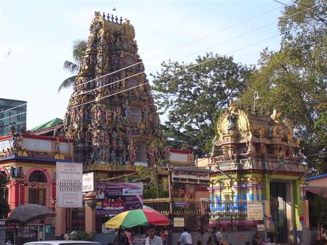
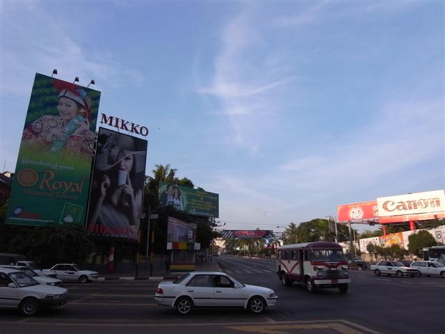
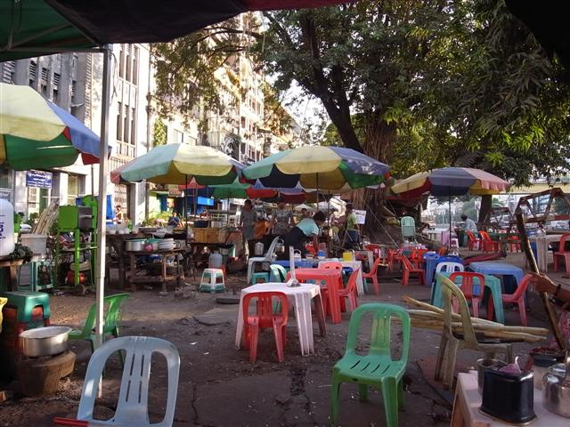
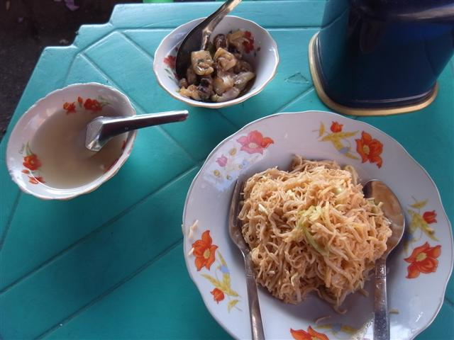
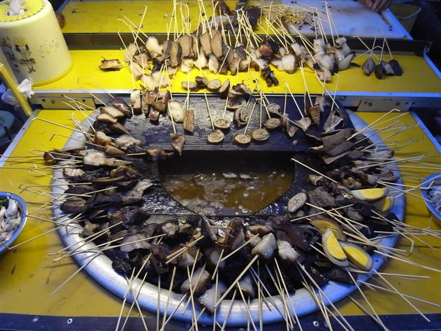
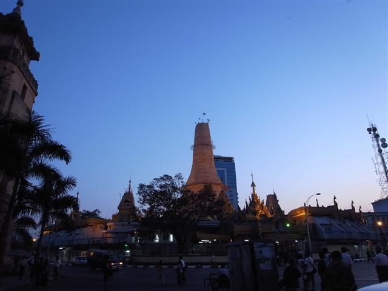
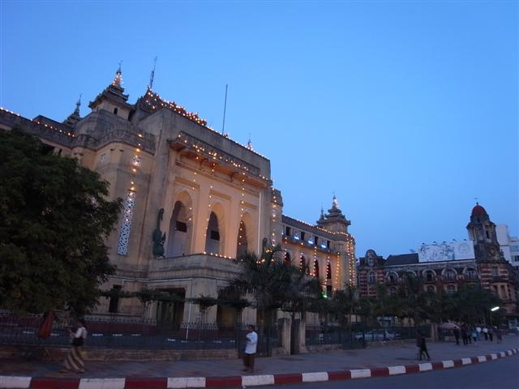
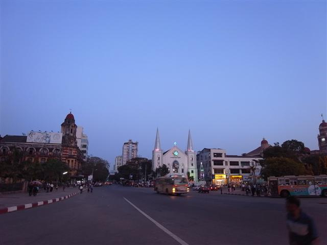